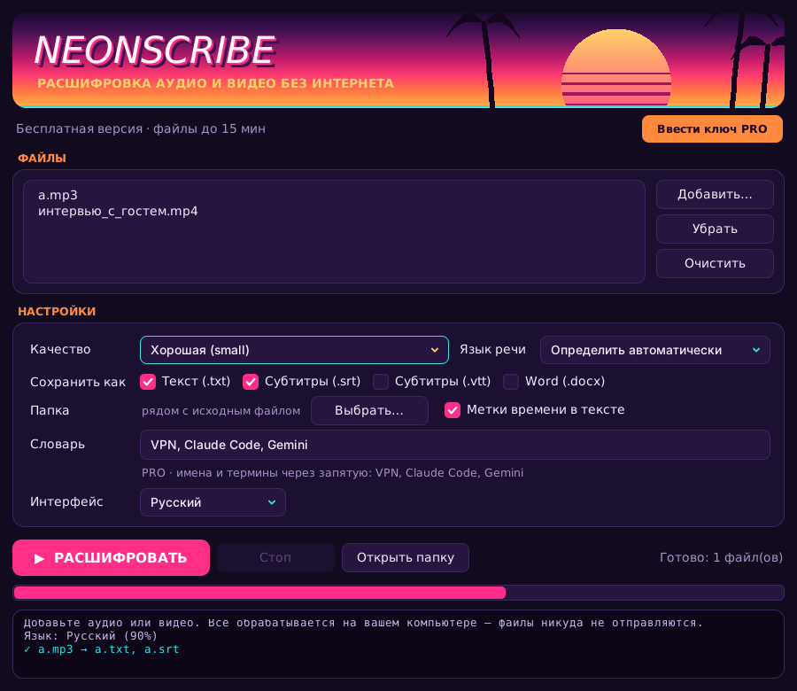

Для Windows 10 и 11 · русский и английский
Расшифровка аудио и видео в текст — без интернета
Лекции, интервью, созвоны, длинные голосовые и видео для YouTube. Перетащите файл — получите текст, документ Word и субтитры. Всё работает на вашем компьютере: записи никуда не отправляются.

Кому пригодится
Всем, кто устал переслушивать записи, чтобы найти одну фразу.
Студентам
Запишите лекцию на телефон — дома получите конспект с метками времени.
Блогерам и монтажёрам
Готовые субтитры .srt для YouTube, VK Видео, Premiere и CapCut: ровные строки, фразы не рвутся посередине.
Журналистам
Интервью в документ Word за минуты. Конфиденциальные записи не уходят в чужое облако.
Всем, кому шлют голосовые
Пятиминутное голосовое из Telegram превращается в текст, который читается за полминуты.
Почему без интернета — это плюс
Приватно
Распознавание идёт на вашем компьютере. Записи разговоров, лекций и встреч никуда не загружаются.
Без оплаты за минуты
Облачные сервисы берут деньги за каждый час записи или ежемесячно. Здесь — один раз, и расшифровывайте сколько угодно.
Работает везде
В поезде, в самолёте, на даче. Бесплатные модели уже внутри установщика — ничего не нужно докачивать.
Что умеет
Аудио и видео: mp3, m4a, ogg, wav, mp4, mkv, mov и другие
Язык речи определяется сам — русский, английский и ещё 10 языков
Текст с абзацами и метками времени, Word, субтитры .srt и .vtt
Очередь файлов: добавьте целую папку и займитесь своими делами
Результат открывается прямо в программе — не надо искать, куда сохранилось
Словарь терминов: имена и названия пишутся правильно
Точная модель PRO слышит больше
Одна и та же запись быстрой разговорной речи. Слова, которые бесплатная модель «Хорошая» расслышала неверно, а «Точная» из PRO — правильно:
неронок
нейронок
демитов
лимитов
клаут-клод
Cloud Code
5 работ облака
5 терабайт облака
Бесплатно или PRO
Бесплатно
0 ₽
✓ Файлы до 15 минут
✓ Модели «Быстрая» и «Хорошая»
✓ Текст .txt и субтитры .srt, .vtt
✓ Без рекламы и регистрации
PRO навсегда
499 ₽ один раз, без подписки
✓ Всё из бесплатной версии
✓ Файлы любой длины
✓ Модели «Точная» и «Максимальная»
✓ Сохранение в Word
✓ Словарь терминов и имён
✓ Обновления версии 0.x
Оплата картой или через СБП. Ключ придёт на почту в течение 24 часов, обычно быстрее. Нажимая «Купить», вы принимаете условия оферты.
Как начать
1
Скачайте установщик
Около 660 МБ — внутри уже есть всё для работы без интернета.
2
Установите
Права администратора не нужны. Ярлык появится на рабочем столе.
3
Перетащите файл
Нажмите «Расшифровать» и откройте готовый текст прямо в программе.
Windows 10 или 11, 64-бит · от 1 ГБ на диске
Частые вопросы
Как оплатить и получить PRO?
Нажмите «Купить PRO за 499 ₽» и оплатите картой или через СБП на защищённой странице платёжного сервиса «Робокасса». Чек придёт на почту из приложения «Мой налог», ключ — на ту же почту в течение 24 часов, обычно быстрее. Платёж разовый, подписки нет.
Как активировать PRO?
В программе нажмите «Ввести ключ PRO» → «Вставить из буфера» → «Активировать». Ключ работает без интернета и сохраняется при переустановке.
Windows пишет «Windows защитила ваш компьютер». Это безопасно?
Так Windows реагирует на новые программы без платной цифровой подписи. Нажмите «Подробнее», затем «Выполнить в любом случае». Установщик не просит прав администратора и ставит программу только в вашу папку пользователя.
Нужен ли мощный компьютер?
Нет, программа работает на обычном процессоре. На слабом ноутбуке выбирайте «Быструю» или «Хорошую» модель — «Точная» качественнее, но медленнее. Рекомендуем от 8 ГБ оперативной памяти.
Куда отправляются мои записи?
Никуда. Распознавание происходит на вашем компьютере. Интернет нужен только один раз — чтобы докачать точные модели после покупки PRO. Подробнее — в политике конфиденциальности.
Насколько точно распознаёт?
Чёткая речь, лекции и интервью — очень хорошо, особенно на модели «Точная». Быстрая разговорная речь, сленг и песни под музыку — с ошибками в отдельных словах. Проверьте на своих записях в бесплатной версии до покупки.
Что, если программа мне не подойдёт?
В течение 14 дней после оплаты напишите на screwy_piero@mail.ru — вернём 499 ₽ полностью, без объяснения причин. Подробности — в публичной оферте.